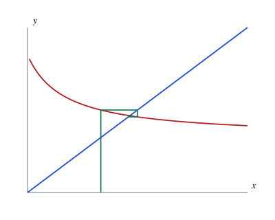

<script src="/assets/redirect.js"></script>
<section class="theory" data-section="P23-6.2">
<h2>6.2 Improving your solution</h2>
<p class="src">Based on Cambridge International AS &amp; A Level Mathematics: Pure Mathematics 2 &amp; 3 Coursebook (Sue Pemberton and Julianne Hughes, series editor Julian Gilbey), Chapter 6 Numerical solutions of equations, printed pp.140–148 (physical PDF page = printed page + 12). Own wording and new numbers, following the coursebook treatment of rearrangements, iterative formulae, and cobweb or staircase diagrams.</p>
<p class="key-words"><strong>Key words:</strong> <em>iterative formula</em>, <em>iteration</em>, <em>cobweb diagram</em>, <em>staircase diagram</em></p>
<h3>Rearranging into the form \(x=\mathrm{F}(x)\)</h3>
<p>Once a root \(\alpha\) has been located in an interval, the approximation can be improved by <strong>iteration</strong>. The equation \(f(x)=0\) is rearranged into the form \(x=\mathrm{F}(x)\). A first approximation \(x_1\) is chosen in the interval, and the <strong>iterative formula</strong></p>
<p>\[x_{n+1}=\mathrm{F}(x_n)\]</p>
<p>is applied repeatedly. Each new value is used as the next input. If the sequence converges, later terms approach \(\alpha\).</p>
<p>Not every rearrangement converges. When the process does work, a graph of \(y=x\) and \(y=\mathrm{F}(x)\) shows either a spiral (a cobweb diagram) or a stepped path (a staircase diagram) towards the intersection. Which of those appears depends on the sign of \(\mathrm{F}'(x)\) near the root: if \(\mathrm{F}'\) is negative the path is a cobweb, and if \(\mathrm{F}'\) is positive the path is a staircase.</p>
<figure><figcaption>A cobweb path for the iteration \(x_{n+1}=\mathrm{F}(x_n)\), approaching the intersection of \(y=x\) and \(y=\mathrm{F}(x)\).</figcaption></figure>
<div class="ms-widget" data-widget="cobweb-iteration"></div>
<script src="../../assets/widget-kinds-pkg13.js"></script>
<div class="worked-example">
<h4>Worked example 1: A rearrangement</h4>
<p class="src">Coursebook, 6.2, rearrangement of a cubic (Worked example style). New equation \(x^3+x-7=0\).</p>
<p>Show that the equation \(x^3+x-7=0\) can be rearranged as \(x=\sqrt[3]{7-x}\).</p>
<ol class="steps">
<li>\(x^3+x-7=0\) gives \(x^3=7-x\), so \(x=\sqrt[3]{7-x}\) <span class="mark">A1</span></li>
</ol>
<p class="final"><strong>Answer:</strong> \(x=\sqrt[3]{7-x}\)</p>
</div>
<div class="worked-example">
<h4>Worked example 2: Using an iterative formula</h4>
<p class="src">Coursebook, 6.2, recording iterates to a required accuracy. New formula \(x_{n+1}=\sqrt[3]{7-x_n}\) with \(x_1=1.8\).</p>
<p>The iterative formula \(x_{n+1}=\sqrt[3]{7-x_n}\) is used with \(x_1=1.8\). Find the root of \(x^3+x-7=0\) correct to 2 decimal places, giving each iterate to 4 decimal places.</p>
<ol class="steps">
<li>\(x_2=\sqrt[3]{7-1.8}=\sqrt[3]{5.2}=1.7325\) (4 decimal places). Then \(x_3=1.7399\), \(x_4=1.7391\), \(x_5=1.7392\) <span class="mark">M1</span></li>
<li>The later terms all lie in \((1.735,1.745)\), so the root is \(1.74\) to 2 decimal places. (Alternatively, \(f(1.735)&lt;0\) and \(f(1.745)&gt;0\) for \(f(x)=x^3+x-7\).) <span class="mark">A1</span></li>
</ol>
<p class="final"><strong>Answer:</strong> \(1.74\)</p>
</div>
<p>In a typical examination question you must:</p>
<ul>
<li>use the given starting value and apply the formula correctly at least once;</li>
<li>record enough iterates, to the number of figures asked for;</li>
<li>give the final answer to the required accuracy, and justify it either by two consecutive iterates agreeing when rounded, or by a sign change of \(f\) in the bounding interval (for example \((1.735,1.745)\) if the answer is required to 2 decimal places as \(1.74\)).</li>
</ul>
<div class="worked-example">
<h4>Worked example 3: Iterates as decimals</h4>
<p class="src">Coursebook, 6.2, decimal iterates. New formula \(x_{n+1}=\dfrac{2x_n+5}{x_n+1}\) with \(x_1=2\), to 2 decimal places, recording 4 decimal places.</p>
<p>Use \(x_{n+1}=\dfrac{2x_n+5}{x_n+1}\) with \(x_1=2\), giving each iterate to 4 decimal places, to find the root correct to 2 decimal places.</p>
<ol class="steps">
<li>\(x_2=\dfrac{4+5}{2+1}=3\), \(x_3=\dfrac{6+5}{3+1}=2.75\), so \(x_3=2.7500\) to 4 decimal places <span class="mark">M1</span></li>
<li>\(x_4=2.8000\), \(x_5=2.7895\), \(x_6=2.7917\), \(x_7=2.7912\). These later terms all lie in \((2.785,2.795)\), so the root is \(2.79\) to 2 decimal places <span class="mark">A1</span></li>
</ol>
<p class="final"><strong>Answer:</strong> \(2.79\)</p>
</div>
<h3>Common mistakes</h3>
<ul>
<li>Using a starting value from the wrong interval, or applying \(\mathrm{F}\) only once and calling that the root.</li>
<li>Rounding too early, so that later iterates are no longer accurate enough to justify the final decimal place.</li>
<li>Giving a final answer to the wrong accuracy, or omitting the justification (agreement of iterates, or a sign change in the bounding interval).</li>
</ul>
<h3>Past paper</h3>
<p class="src">9709/21/O/N/11 Q6(ii)(iii), official QP and official MS.</p>
<p>(i) Verify by calculation that the cubic equation \(x^3-2x^2+5x-3=0\) has a root that lies between \(x=0.7\) and \(x=0.8\).</p>
<p>(ii) Show that this root also satisfies an equation of the form \(x=\dfrac{ax^2+3}{x^2+b}\), where the values of \(a\) and \(b\) are to be found. [2]</p>
<p>(iii) With these values of \(a\) and \(b\), use the iterative formula \(x_{n+1}=\dfrac{ax_n^2+3}{x_n^2+b}\) to determine the root correct to 2 decimal places. Give the result of each iteration to 4 decimal places. [3]</p>
<details><summary>Mark scheme</summary>
<ol class="steps">
<li>(ii) Rearrange the equation to the given equation, or vice versa. <span class="mark">B1</span></li>
<li>(ii) State \(a=2\) and \(b=5\). <span class="mark">B1</span></li>
<li>(iii) Use the iterative formula correctly at least once. <span class="mark">M1</span></li>
<li>(iii) Obtain the final answer \(0.74\). <span class="mark">A1</span></li>
<li>(iii) Show sufficient iterations to justify its accuracy to 2 decimal places, or show there is a sign change in the interval \((0.735,0.745)\). Starting at \(x_1=0.75\) gives \(x_2=0.7416\), \(x_3=0.7387\), \(x_4=0.7378\) (4 decimal places), and later terms remain in \((0.735,0.745)\). <span class="mark">B1</span></li>
</ol>
</details>
<h3>Quick checks</h3>
<div class="quick-check">
<h4>Quick check 1</h4>
<p>The iterative formula is \(x_{n+1}=\dfrac{x_n+6}{2}\) and \(x_1=2\). Find \(x_2\).</p>
<details><summary>Worked solution</summary>
<ol class="steps">
<li>\(x_2=\dfrac{2+6}{2}=4\)</li>
</ol>
<p class="final"><strong>Answer:</strong> \(4\)</p>
</details>
</div>
<div class="quick-check">
<h4>Quick check 2</h4>
<p>The same formula is used, and \(x_2=4\). Find \(x_3\).</p>
<details><summary>Worked solution</summary>
<ol class="steps">
<li>\(x_3=\dfrac{4+6}{2}=5\)</li>
</ol>
<p class="final"><strong>Answer:</strong> \(5\)</p>
</details>
</div>
<div class="quick-check">
<h4>Quick check 3</h4>
<p>The same formula is used, and \(x_3=5\). Find \(2x_4\).</p>
<details><summary>Worked solution</summary>
<ol class="steps">
<li>\(x_4=\dfrac{5+6}{2}=5.5\), so \(2x_4=11\)</li>
</ol>
<p class="final"><strong>Answer:</strong> \(11\)</p>
</details>
</div>
</section>
